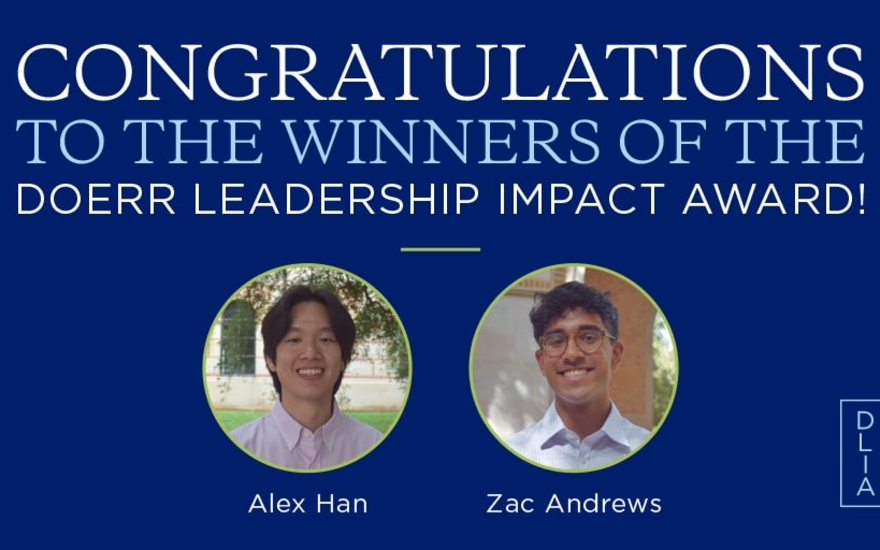
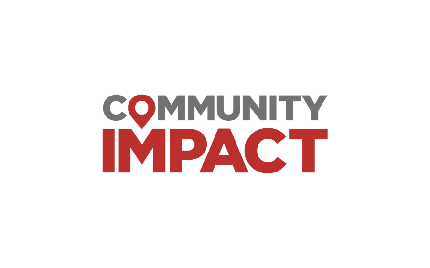
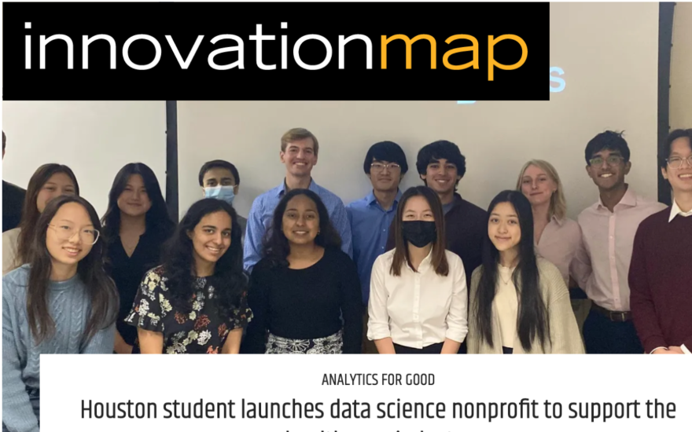
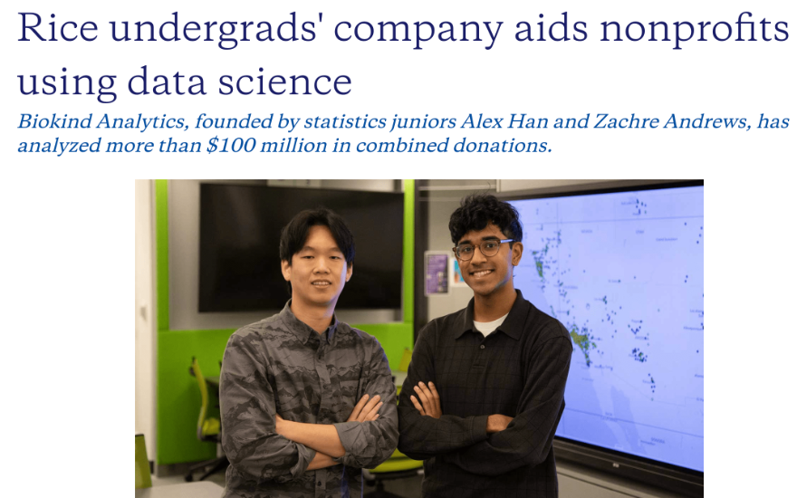

Coverage of our student analysts, the nonprofits they serve, and what it looks like to treat data science as a public good. Plus the latest writing from chapters across the network.




Semester recaps, team spotlights, and field notes from chapters. Written by our students.